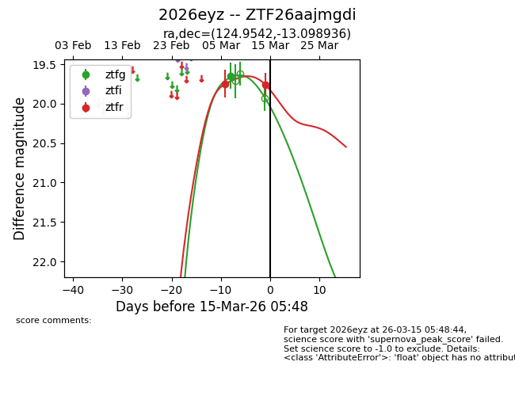
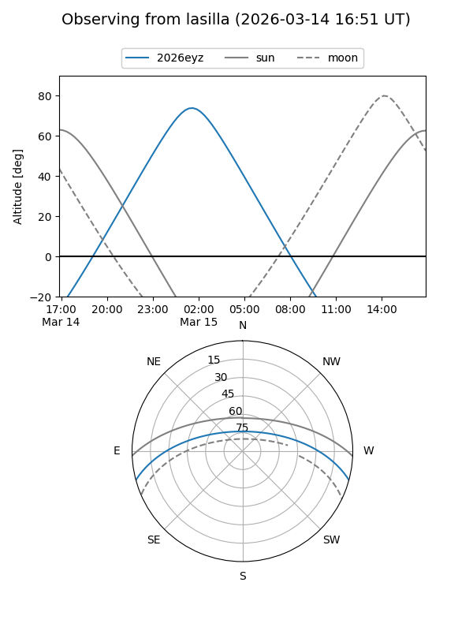
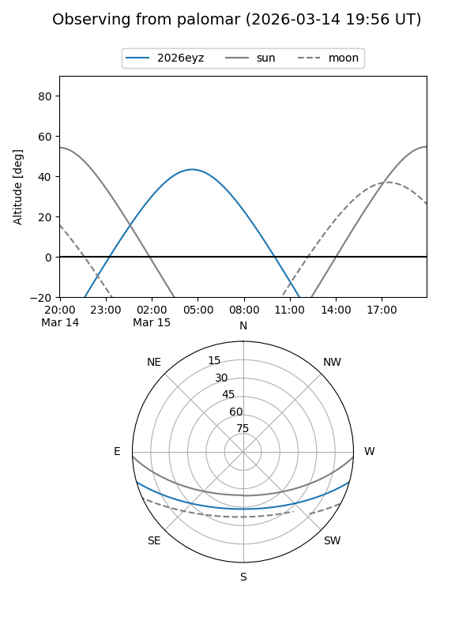
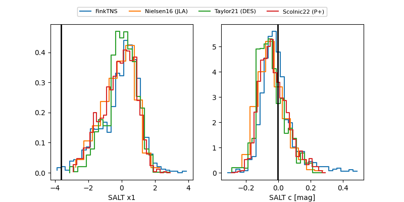

2026eyz
Target 2026eyz at 2026-03-15 05:50
Aliases and brokers:
FINK: link
Lasair: link
ALeRCE: link
TNS: link
YSE: link
alt names
ZTF26aajmgdi (ztf,fink_ztf)
2026eyz (tns,yse)
Coordinates:
equatorial (ra, dec) = 124.9542,-13.09894
equatorial (HMS+DMS) = 08:19:49.01,-13:05:56.17
galactic (l, b) = (235.1573,+12.86814)
Flags:
Photometry:
last ztfg=19.65, ztfr=19.76
1 ztfg, 2 ztfr detections
Lightcurve

Visibility


Additional plots
